Audio Tracks and Clips
From Audacity Manual
Each clip in a track can then be moved around independently, but they all share several properties of the parent track such as its overall volume, panning, sample rate and sample format.
Channels, Tracks and Clips
The terms channel, track and clip can be a little confusing, especially because some programs may use them to mean slightly different things. Within Audacity, the meaning is as follows:
- A channel is for audio recording (input) or playback (output). Audacity can record two channels of input (stereo), and more if you have a special soundcard or audio device that supports more than two simultaneous channels. Audacity supports only two channels of playback (output), no matter what kind of audio hardware you have.
- An audio track is like one instrument in your symphony, or one voice in your podcast. You can add more tracks, and all of them will be mixed together to create your final output, but during editing you can manipulate each track independently. If you have an interview recorded with two microphones, each one can go in a separate track. If you have background music, that could go in a third track. You can move the whole track along the Timeline so that it plays at a different point in time in the mix, but until it is split you cannot move individual parts of it around.
- A clip inside an audio track is a separate section of that track which has been split so that it can be manipulated somewhat independently of the other clips in the track. For example, you can split an interview into separate clips for each sentence then move them around individually although they are all from the same track. Or you could move a clip to another track that is panned further right, or split it to a new, empty track. The new track only contains that single clip, so again you can only move that whole track unless you split it into multiple clips.
Splitting a track into clips
When you record some audio or import audio from a file, you get a single track. In many cases, there are natural gaps in the audio - silence between sentences or pauses between phrases in music. Those are good candidates for splitting the track into multiple clips, allowing you to move or otherwise manipulate those clips independently. There are eight ways to create multiple clips in a track.
- at a region in an existing track or clip, removing the selected audio without shifting the following audio.
- at a region in an existing track or clip, removing the selected audio to the Audacity clipboard without shifting the following audio.
- at the cursor or region in an existing track or clip, doing nothing except separating it into multiple clips.
- at a region in an existing track or clip, moving the selected audio to the same position in a new track at the bottom of the project.
- at a region in an existing track or clip, creating clips either side of absolute silences.
- from the Audacity clipboard into vacant space in an existing track.
- Generate some audio into vacant space in an existing track.
- Drag a clip from a different track (or the whole track) into vacant space in an existing track using Time Shift Tool.
As an example, the "before Split " and "after Split" images below show that after selecting , the two boundaries of the gray selection region are overlaid with a solid black split line, marking the boundaries of the three resulting clips.
- 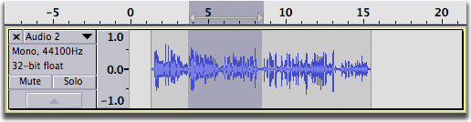
- 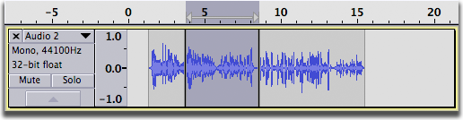
Merging or joining clips
Unlike cursor points or selection regions, split lines representing boundaries between clips persist in the waveform of the track until the clips are merged or joined back into one clip.
An adjacent pair of clips may be "merged" into one clip by clicking on the split line to remove it. You can perform a similar "join" action without a mouse by selecting across one or more split lines then using to remove the split lines so as to make one clip.
Time-shifting clips
To move clips around independently, use the Time Shift Tool  . When you click on a clip and drag it to the left or right, this is called time-shifting because you are changing the time at which that audio will be heard.
. When you click on a clip and drag it to the left or right, this is called time-shifting because you are changing the time at which that audio will be heard.
- 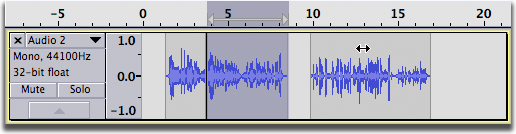
If you click outside a selection area when dragging clips with the Time Shift Tool, the selection area will remain where it was as shown above. Otherwise, the selection area will move with the clip(s).
To move multiple clips at once, select all of the clips you want to move using the Selection Tool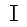, then use the Time Shift Tool to click and drag within the selection area - all selected clips will move together (see before and after figures below).
- 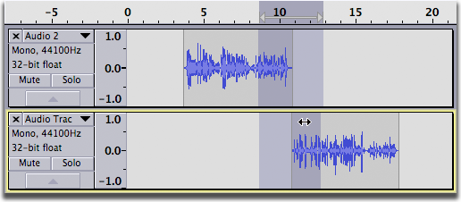
- 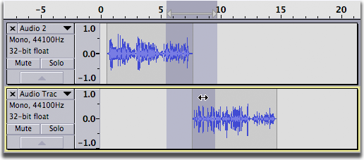
Time-shifting stereo clips
In most cases time-shifting a clip in a stereo track will work exactly the same way as in a mono track. Most stereo tracks will have continuous audio in both channels and time-shifting a clip will move both channels equally.
Here is an example of a "standard" stereo track.
- 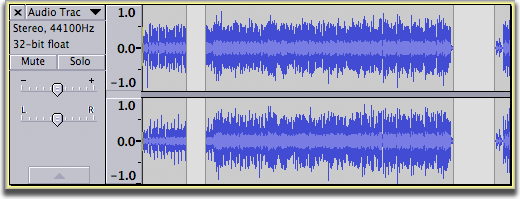
When you time-shift a clip in this track, both channels move simultaneously.
- 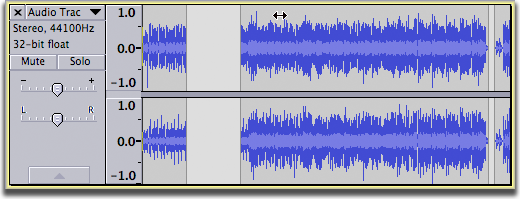
However, there may be times when you will have a stereo track containing separate clips in each channel.
Here we see two mono tracks with multiple clips in each track.
- 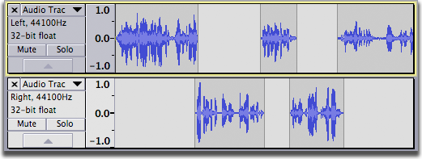
After selecting "Make Stereo Track" from the Audio Track Dropdown Menu in the upper track, we get this.
- 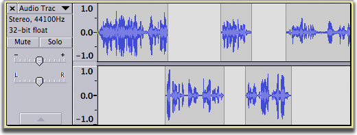
Here we have positioned the Time Shift pointer over the first clip in the left channel of the stereo track.
- 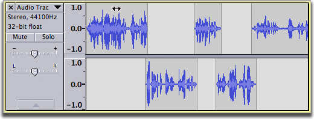
After dragging with the Time Shift tool, the first clip in the left channel has moved independently of the clips in the right channel.
- 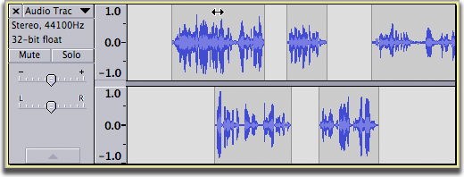
If you stop dragging the first left-channel clip just after it starts to overlap with the right-channel clip below, then click in the left-channel clip at any point where the right-channel clip now overlaps with it, you can drag the right-channel clip simultaneously with the left-channel clip.
If you click in the right-channel clip where there is not yet an overlap, you can resume dragging that clip independently.
Moving a Clip Between Tracks
The Time Shift Tool can also be used to move a single clip between tracks, but there must be room for the clip between the clips on the second track.
Getting ready to drag a clip from the first track into the second track. 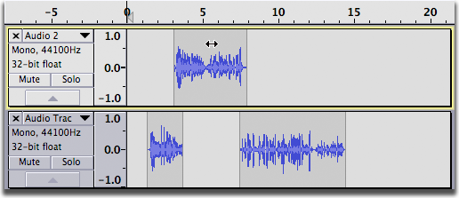 The clip does not fit between the two clips on the second track. 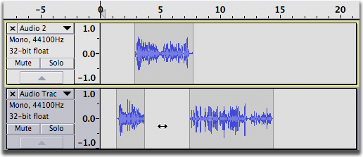 The clip does fit in after the second clip the second track. 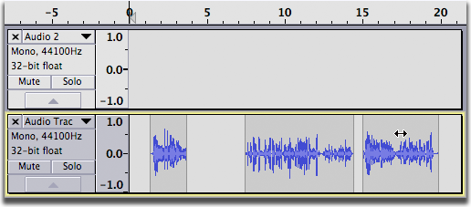